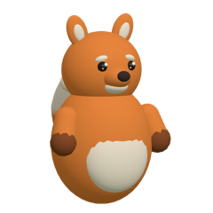

← 관리자 홈

UTM 링크
관리자 계정을 확인하는 중…
새 링크 만들기
utm_source · 어디서
utm_medium · 어떤 형태
utm_campaign · 무슨 홍보
소문자·숫자·밑줄만. 대문자와 띄어쓰기는 자동으로 바뀌어요.
utm_content · 어느 게시물 (선택)
어디로 보낼까요
메모 (시트 H열)
링크 만들고 시트에 기록
방금 만든 링크
최근 링크
· 시트 링크내역 최근 30줄 · 클릭은 짧은 링크로 들어온 수(봇 제외)
날짜
source / medium
campaign · content
메모
링크
클릭